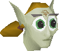

Welcome to my Zanik Fan Site!
The most popular fan site dedicated to Old School Runescape's greatest character, Zanik the cave goblin! I will NOT include information from Runescape 3 because I do not consider Runescape 3 or its models to be canon!! I do hope that they will add more Zanik content to Old School Runscape but NOT the new models.
Zanik Lore
Who is Zanik?
Zanik is a cave goblin who first appears in the quest 'Death to the Dorgeshuun.' She is a 'cute goblin girl' who becomes the first cave goblin to visit the surface (Lumbridge). She has a great destiny despite her enemies in HAM (Humans Against Monsters) and the Great High War God (Bandos).
The Future of Zanik
Because Zanik had a special reaction to the Tears of Guthix, I think she may end up replacing Guthix as one of Old School Runscape's Gods. Because she is green, this would be easy to implement in terms of renaming existing Guthix objects to Zanik objects.
Zanik's Sexuality
Zanik is canonically a proud bisexual and one of the many LGBT characters in Old School Runescape. This was confirmed by Mod Raven. She is known to have feelings for Millie Miller, as well as the player character, regardless of the player character's gender.
Under Construction
This website is under construction. I will just fill the rest of teh website with Zanik fanarts that I liked. Please let me know if you have any more ideas for the site!